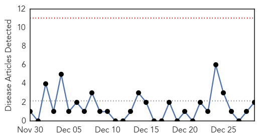
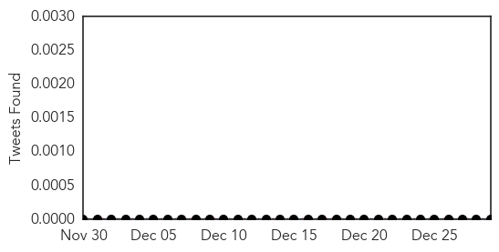
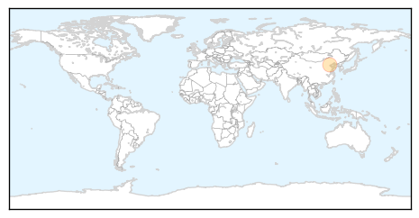
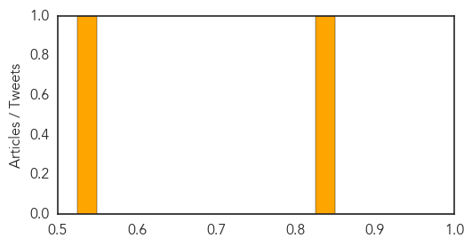

Toggle navigation
Early Warning
Daily Alerts
Hepatitis
Dec 29, 2014
Compare to:
-
Dengue Fever
Hemmorhagic Fever
Mold/Fungal Infection
Influenza
Meningitis
Pertussis / Whooping Cough
Middle East Respiratory Syndrome
Cholera
Chikungunya
Yellow Fever
Bubonic Plague
West Nile Virus
Swine Flu
Ebola
Measles
Unknown
Mumps
30 Day Trends
Web: 0
alerts
, 0
warnings
Twitter: 0
alerts
, 0
warnings
Top Articles:
0.828
Patients concealing infectious diseases put doctors at risk
0.533
Govt to provide best health facilities
Top Tweets:
No tweets found for Dec 29, 2014
Web/News Articles

Tweets

Article Locations

Article Confidences
